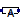
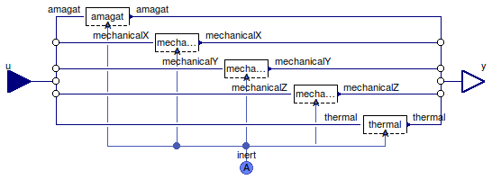

Table of Contents
- User's Guide
- Conditions
- Assemblies
- Regions
- Subregions
- Connectors
- Characteristics
- Units
- Quantities
- BaseClasses
Download
- Latest: FCSys-2.0.zip (**Please check back soon or contact kdavies4 at gmail.com.)

| Name | Description |
|---|---|
|  Phase | Condition for the InertAmagat connector, e.g., of a Phase model |
| Conditions for additivity of volume | |
| Mechanical Conditions | |
| Thermal conditions | |
| Base classes (not for direct use) |

| Type | Name | Default | Description |
|---|---|---|---|
| Volume | |||
| Volume | volumeCondition | redeclare Volume.Volume volu... | Condition |
| X component of linear momentum | |||
| Boolean | inclLinX | true | Include |
| Force | linXCondition | redeclare Mechanical.Force l... | Condition |
| Y component of linear momentum | |||
| Boolean | inclLinY | true | Include |
| Force | linYCondition | redeclare Mechanical.Force l... | Condition |
| Z component of linear momentum | |||
| Boolean | inclLinZ | true | Include |
| Force | linZCondition | redeclare Mechanical.Force l... | Condition |
| Heat | |||
| HeatFlowRate | thermal | redeclare Thermal.HeatFlowRa... | Condition |
| Type | Name | Description |
|---|---|---|
| RealInputBus | u | Input bus for external signal sources |
| InertAmagat | inert | Single-species connector for linear momentum and heat, with additivity of pressure |
model Phase "Condition for the InertAmagat connector, e.g., of a Phase model" extends FCSys.BaseClasses.Icons.Conditions.Single; // Volumereplaceable Volume.Volume volumeCondition( final inclLinX=inclLinX, final inclLinY=inclLinY, final inclLinZ=inclLinZ) constrainedby Volume.BaseClasses.PartialCondition "Condition"; // X component of linear momentum parameter Boolean inclLinX=true "Include";replaceable Mechanical.Force linXCondition( final inclLinX=inclLinX, final inclLinY=inclLinY, final inclLinZ=inclLinZ) if inclLinX constrainedby Mechanical.BaseClasses.PartialCondition "Condition"; // Y component of linear momentum parameter Boolean inclLinY=true "Include";replaceable Mechanical.Force linYCondition( final inclLinX=inclLinX, final inclLinY=inclLinY, final inclLinZ=inclLinZ) if inclLinY constrainedby Mechanical.BaseClasses.PartialCondition "Condition"; // Z component of linear momentum parameter Boolean inclLinZ=true "Include";replaceable Mechanical.Force linZCondition( final inclLinX=inclLinX, final inclLinY=inclLinY, final inclLinZ=inclLinZ) if inclLinZ constrainedby Mechanical.BaseClasses.PartialCondition "Condition"; // Heatreplaceable Thermal.HeatFlowRate thermal( final inclLinX=inclLinX, final inclLinY=inclLinY, final inclLinZ=inclLinZ) constrainedby Thermal.BaseClasses.PartialCondition "Condition"; FCSys.Connectors.RealInputBus u "Input bus for external signal sources"; FCSys.Connectors.InertAmagat inert(final n_lin=countTrue({inclLinX,inclLinY, inclLinZ})) "Single-species connector for linear momentum and heat, with additivity of pressure"; equation // Volumeconnect(volumeCondition.inert, inert); connect(u.volume, volumeCondition.u); // X component of linear momentumconnect(linXCondition.inert, inert); connect(u.linX, linXCondition.u); // Y component of linear momentumconnect(linYCondition.inert, inert); connect(u.linY, linYCondition.u); // Z component of linear momentumconnect(linZCondition.inert, inert); connect(u.linZ, linZCondition.u); // Heatconnect(thermal.inert, inert); connect(u.thermal, thermal.u); end Phase;